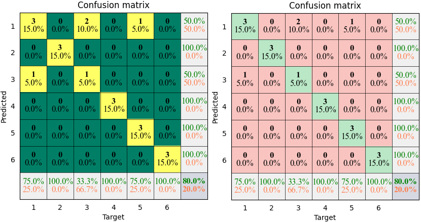
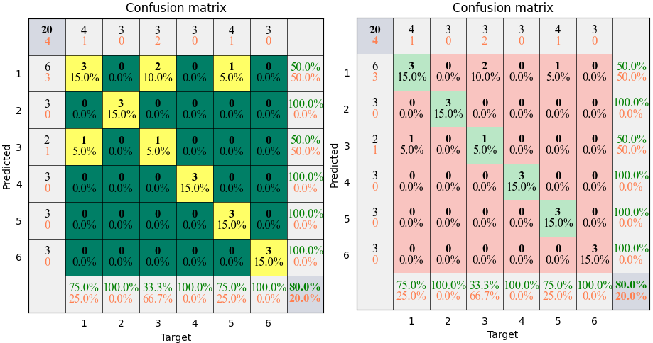

torchbox.evaluation package
Submodules
torchbox.evaluation.capacity module
- torchbox.evaluation.capacity.capacity(H, snr, cdim, dim=(-2, -1), keepdim=False, reduction='mean')
computes capacity of channel
MIMO-OFDM Wireless Communications with MATLAB
- Parameters:
H (Tensor) – the input channel
snr (float) – the signal-to-noise ratio
cdim (int or None) – If
His complex-valued,cdimis ignored. IfHis real-valued andcdimis an integer thenHwill be treated as complex-valued, in this case,cdimspecifies the complex axis.dim (int or None) – The dimension indexes of antenna of BS and MS. The default is
(-2, -1).keepdim (bool) – keep dimensions? (include complex dim, defalut is
False)reduction (str or None, optional) – The operation mode of reduction,
None,'mean'or'sum'(the default is ‘mean’)
torchbox.evaluation.classification module
- torchbox.evaluation.classification.accuracy(P, T, axis=None)
computes the accuracy
\[A = \frac{\sum(P==T)}{N} \]where \(N\) is the number of samples.
- Parameters:
- Returns:
the accuracy
- Return type:
- Raises:
ValueError –
PandTshould have the same shape!ValueError – You should specify the one-hot encoding axis when
PandTare in one-hot formation!
Examples
import torchbox as tb T = th.tensor([1, 2, 3, 4, 5, 6, 1, 2, 3, 4, 5, 6, 1, 2, 3, 4, 5, 6, 1, 5]) P = th.tensor([1, 2, 3, 4, 1, 6, 3, 2, 1, 4, 5, 6, 1, 2, 1, 4, 5, 6, 1, 5]) print(tb.accuracy(P, T)) #---output 0.8
- torchbox.evaluation.classification.categorical2onehot(X, nclass=None, offset='min')
converts categorical to onehot
- torchbox.evaluation.classification.confusion(P, T, axis=None, cmpmode='...')
computes the confusion matrix
- Parameters:
P (list or tensor) – predicted label (categorical or one-hot)
T (list or tensor) – target label (categorical or one-hot)
axis (int, optional) – the one-hot encoding axis, by default None, which means
PandTare categorical.cmpmode (str, optional) –
'...'for one-by one mode,'@'for multiplication mode (\(P^TT\)), by default ‘…’
- Returns:
the confusion matrix
- Return type:
tensor
- Raises:
ValueError –
PandTshould have the same shape!ValueError – You should specify the one-hot encoding axis when
PandTare in one-hot formation!
Examples
import torchbox as tb T = th.tensor([1, 2, 3, 4, 5, 6, 1, 2, 3, 4, 5, 6, 1, 2, 3, 4, 5, 6, 1, 5]) P = th.tensor([1, 2, 3, 4, 1, 6, 3, 2, 1, 4, 5, 6, 1, 2, 1, 4, 5, 6, 1, 5]) C = tb.confusion(P, T, cmpmode='...') print(C) C = tb.confusion(P, T, cmpmode='@') print(C) #---output [[3. 0. 2. 0. 1. 0.] [0. 3. 0. 0. 0. 0.] [1. 0. 1. 0. 0. 0.] [0. 0. 0. 3. 0. 0.] [0. 0. 0. 0. 3. 0.] [0. 0. 0. 0. 0. 3.]] [[3. 0. 2. 0. 1. 0.] [0. 3. 0. 0. 0. 0.] [1. 0. 1. 0. 0. 0.] [0. 0. 0. 3. 0. 0.] [0. 0. 0. 0. 3. 0.] [0. 0. 0. 0. 0. 3.]]
- torchbox.evaluation.classification.kappa(C)
computes kappa
\[K = \frac{p_o - p_e}{1 - p_e} \]where \(p_o\) and \(p_e\) can be obtained by
\[p_o = \frac{\sum_iC_{ii}}{\sum_i\sum_jC_{ij}} \]\[p_e = \frac{\sum_j\left(\sum_iC_{ij}\sum_iC_{ji}\right)}{\sum_i\sum_jC_{ij}} \]- Parameters:
C (Tensor) – The confusion matrix
- Returns:
The kappa value.
- Return type:
Examples
import torchbox as tb T = th.tensor([1, 2, 3, 4, 5, 6, 1, 2, 3, 4, 5, 6, 1, 2, 3, 4, 5, 6, 1, 5]) P = th.tensor([1, 2, 3, 4, 1, 6, 3, 2, 1, 4, 5, 6, 1, 2, 1, 4, 5, 6, 1, 5]) C = tb.confusion(P, T, cmpmode='...') print(tb.kappa(C)) print(tb.kappa(C.T)) #---output 0.7583081570996979 0.7583081570996979
- torchbox.evaluation.classification.onehot2categorical(X, axis=-1, offset=0)
converts onehot to categorical
- torchbox.evaluation.classification.plot_confusion(C, cmap=None, mode='rich', xticks='label', yticks='label', xlabel='Target', ylabel='Predicted', title='Confusion matrix', **kwargs)
plots confusion matrix.
plots confusion matrix.
- Parameters:
C (Tensor) – The confusion matrix
cmap (None or str, optional) – The colormap, by default
None, which means our default configuration (green-coral) seergb2gray()for available colormap str.mode (str, optional) –
'pure','bare','simple'or'rich'xticks (str, tuple or list, optional) –
'label'–> class labels, or you can specify class name list, by default'label'yticks (str, tuple or list, optional) –
'label'–> class labels, or you can specify class name list, by default'label'xlabel (str, optional) – The label string of axis-x, by default ‘Target’
ylabel (str, optional) – The label string of axis-y, by default ‘Predicted’
title (str, optional) – The title string, by default ‘Confusion matrix’
kwargs –
- linespacingfloat
The line spacing of text, by default
0.15- numftddict
The font dict of integer value, by default
dict(fontsize=12, color='black', family='Times New Roman', weight='bold', style='normal')
- pctftddict
The font dict of percent value, by default
dict(fontsize=12, color='black', family='Times New Roman', weight='light', style='normal')
- restftddict
The font dict of label, title and ticks, by default
dict(fontsize=12, color='black', family='Times New Roman', weight='light', style='normal')
- pctfmtstr
the format of percent value, such as
'%.xf'means formating with two decimal places, by default'%.1f'
- Returns:
pyplot handle
- Return type:
pyplot
Example
 The results shown in the above figure can be obtained by the following codes.
import torchbox as tb T = th.tensor([1, 2, 3, 4, 5, 6, 1, 2, 3, 4, 5, 6, 1, 2, 3, 4, 5, 6, 1, 5.0]) P = th.tensor([1, 2, 3, 4, 1, 6, 3, 2, 1, 4, 5, 6, 1, 2, 1, 4, 5, 6, 1, 5.0]) classnames = ['cat', 'dog', 'car', 'cup', 'desk', 'baby'] print(tb.accuracy(P, T)) print(tb.categorical2onehot(T)) C = tb.confusion(P, T, cmpmode='...') print(C) C = tb.confusion(P, T, cmpmode='@') print(C) print(tb.kappa(C)) print(tb.kappa(C.T)) plt = tb.plot_confusion(C, cmap=None, mode='pure') plt = tb.plot_confusion(C, cmap='summer', xticks=classnames, yticks=classnames, mode='pure') plt.show() plt = tb.plot_confusion(C, cmap=None, mode='bare') plt = tb.plot_confusion(C, cmap='summer', xticks=classnames, yticks=classnames, mode='bare') plt.show() plt = tb.plot_confusion(C, cmap=None, mode='simple') plt = tb.plot_confusion(C, cmap='summer', xticks=classnames, yticks=classnames, mode='simple') plt.show() plt = tb.plot_confusion(C, cmap=None, mode='rich') plt = tb.plot_confusion(C, cmap='summer', xticks=classnames, yticks=classnames, mode='rich') plt.show()
{kind=link}
{kind=link}
torchbox.evaluation.contrast module
- torchbox.evaluation.contrast.contrast(X, mode='way1', cdim=None, dim=None, keepdim=False, reduction=None)
Compute contrast of an complex image
'way1'is defined as follows, see [1]:\[C = \frac{\sqrt{{\rm E}\left(|I|^2 - {\rm E}(|I|^2)\right)^2}}{{\rm E}(|I|^2)} \]'way2'is defined as follows, see [2]:\[C = \frac{{\rm E}(|I|^2)}{\left({\rm E}(|I|)\right)^2} \][1] Efficient Nonparametric ISAR Autofocus Algorithm Based on Contrast Maximization and Newton [2] section 13.4.1 in “Ian G. Cumming’s SAR book”
- Parameters:
X (torch tensor) – The image array.
mode (str, optional) –
'way1'or'way2'cdim (int or None) – If
Xis complex-valued,cdimis ignored. IfXis real-valued andcdimis integer thenXwill be treated as complex-valued, in this case,cdimspecifies the complex axis; otherwise (None),Xwill be treated as real-valueddim (tuple, None, optional) – The dimension axis for computing contrast. The default is
None, which means all.keepdim (bool) – keep dimensions? (include complex dim, defalut is
False)reduction (str or None, optional) – The operation mode of reduction,
None,'mean'or'sum'(the default isNone)
- Returns:
C – The contrast value of input.
- Return type:
scalar or tensor
Examples
th.manual_seed(2020) X = th.randn(5, 2, 3, 4) # real C1 = contrast(X, cdim=None, dim=(-2, -1), mode='way1', reduction=None) C2 = contrast(X, cdim=None, dim=(-2, -1), mode='way1', reduction='sum') C3 = contrast(X, cdim=None, dim=(-2, -1), mode='way1', reduction='mean') print(C1, C2, C3) # complex in real format C1 = contrast(X, cdim=1, dim=(-2, -1), mode='way1', reduction=None) C2 = contrast(X, cdim=1, dim=(-2, -1), mode='way1', reduction='sum') C3 = contrast(X, cdim=1, dim=(-2, -1), mode='way1', reduction='mean') print(C1, C2, C3) # complex in complex format X = X[:, 0, ...] + 1j * X[:, 1, ...] C1 = contrast(X, cdim=None, dim=(-2, -1), mode='way1', reduction=None) C2 = contrast(X, cdim=None, dim=(-2, -1), mode='way1', reduction='sum') C3 = contrast(X, cdim=None, dim=(-2, -1), mode='way1', reduction='mean') print(C1, C2, C3) # output tensor([[1.2612, 1.1085], [1.5992, 1.2124], [0.8201, 0.9887], [1.4376, 1.0091], [1.1397, 1.1860]]) tensor(11.7626) tensor(1.1763) tensor([0.6321, 1.1808, 0.5884, 1.1346, 0.6038]) tensor(4.1396) tensor(0.8279) tensor([0.6321, 1.1808, 0.5884, 1.1346, 0.6038]) tensor(4.1396) tensor(0.8279)
torchbox.evaluation.correlation module
- torchbox.evaluation.correlation.cossim(P, G, mode=None, cdim=None, dim=None, keepdim=False, reduction=None)
compute cosine similarity
\[s = \frac{<{\bf p}, {\bf g}>}{\|{\bf p}\|_2\|{\bf g}\|_2} \]Note
For complex, the magnitude still gives the “similarity” between them, where the complex angle gives the complex phase factor required to fully reach that similarity. refers Cosine similarity between complex vectors
- Parameters:
P (Tensor) – predicted/estimated/reconstructed
G (Tensor) – ground-truth/target
mode (str or None) – only work when
PandGare complex-valued in real format or complex format.'abs'or'amplitude'returns the amplitude of similarity,'angle'or'phase'returns the phase of similarityNonereturns the complex-valued similarity (default).cdim (int or None) – If
Pis complex-valued,cdimis ignored. IfPis real-valued andcdimis integer thenPwill be treated as complex-valued, in this case,cdimspecifies the complex axis; otherwise (None),Pwill be treated as real-valueddim (tuple, None, optional) – The dimension indexes for computing cosine similarity. The default is
None, which means all.keepdim (bool) – keep dimensions? (include complex dim, defalut is
False)reduction (str or None, optional) – The operation mode of reduction,
None,'mean'or'sum'(the default isNone)
- Returns:
S (scalar or tensor) – The cosine similarity value of inputs.
see also
peacor(),eigveccor(),CosSim,PeaCor,EigVecCor,CosSimLoss,EigVecCorLoss.
Examples
import torch as th from torchbox import cossim th.manual_seed(2020) P = th.randn(5, 2, 3, 4) G = th.randn(5, 2, 3, 4) dim = (-2, -1) # real C1 = cossim(P, G, cdim=None, dim=dim, reduction=None) C2 = cossim(P, G, cdim=None, dim=dim, reduction='sum') C3 = cossim(P, G, cdim=None, dim=dim, reduction='mean') print(C1, C2, C3) # complex in real format C1 = cossim(P, G, cdim=1, dim=dim, reduction=None) C2 = cossim(P, G, cdim=1, dim=dim, reduction='sum') C3 = cossim(P, G, cdim=1, dim=dim, reduction='mean') print(C1, C2, C3) # complex in complex format P = P[:, 0, ...] + 1j * P[:, 1, ...] G = G[:, 0, ...] + 1j * G[:, 1, ...] C1 = cossim(P, G, cdim=None, dim=dim, reduction=None) C2 = cossim(P, G, cdim=None, dim=dim, reduction='sum') C3 = cossim(P, G, cdim=None, dim=dim, reduction='mean') print(C1, C2, C3)
- torchbox.evaluation.correlation.eigveccor(P, G, npcs=4, mode=None, cdim=None, fdim=-2, sdim=-1, keepdim=False, reduction=None)
computes cosine similarity of eigenvectors
- Parameters:
P (Tensor) – predicted/estimated/reconstructed
G (Tensor) – ground-truth/target
npcs (int, optional) – the number principal components for comparing, by default 4
mode (str or None) – only work when
PandGare complex-valued in real format or complex format.'abs'or'amplitude'returns the amplitude of similarity,'angle'or'phase'returns the phase of similarityNonereturns the complex-valued similarity (default).cdim (int or None) – If
PandGis complex-valued,cdimis ignored. IfPandGis real-valued andcdimis integer thenPandGwill be treated as complex-valued, in this case,cdimspecifies the complex axis; otherwise (None),PandGwill be treated as real-valuedfdim (int, optional) – the dimension index of feature, by default -2
sdim (int, optional) – the dimension index of sample, by default -1
keepdim (bool) – keep dimensions? (include complex dim, defalut is
False)reduction (str or None, optional) – The operation mode of reduction,
None,'mean'or'sum'(the default isNone)
- Returns:
S (scalar or tensor) – The eigenvector correlation value of inputs.
see also
cossim(),peacor(),CosSim,PeaCor,EigVecCor,CosSimLoss,EigVecCorLoss.
Examples
import torch as th from torchbox import eigveccor print('---compare eigen vector correlation (complex in real)') G = th.randn(2, 3, 2, 64, 4) P = th.randn(2, 3, 2, 64, 4) print(eigveccor(G, G, npcs=4, cdim=2, sdim=-1, fdim=-2, keepdim=False, reduction='mean')) print(eigveccor(G, G, npcs=4, cdim=2, sdim=-1, fdim=-2, keepdim=False, reduction=None).shape) print('---compare eigen vector correlation (complex in complex)') G = th.randn(2, 3, 64, 4) + 1j*th.randn(2, 3, 64, 4) P = th.randn(2, 3, 64, 4) + 1j*th.randn(2, 3, 64, 4) print(eigveccor(G, G, npcs=4, cdim=None, sdim=-1, fdim=-2, keepdim=False, reduction='mean')) print(eigveccor(G, G, npcs=4, cdim=None, sdim=-1, fdim=-2, keepdim=False, reduction=None).shape)
- torchbox.evaluation.correlation.peacor(P, G, mode=None, cdim=None, dim=None, keepdim=False, reduction=None)
compute the Pearson Correlation Coefficient
The Pearson correlation coefficient can be viewed as the cosine similarity of centered (remove mean) input.
- Parameters:
P (Tensor) – predicted/estimated/reconstructed
G (Tensor) – ground-truth/target
mode (str or None) – only work when
PandGare complex-valued in real format or complex format.'abs'or'amplitude'returns the amplitude of similarity,'angle'or'phase'returns the phase of similarityNonereturns the complex-valued similarity (default).cdim (int or None) – If
Pis complex-valued,cdimis ignored. IfPis real-valued andcdimis integer thenPwill be treated as complex-valued, in this case,cdimspecifies the complex axis; otherwise (None),Pwill be treated as real-valueddim (tuple, None, optional) – The dimension axis for computing the Pearson correlation coefficient. The default is
None, which means all.keepdim (bool) – keep dimensions? (include complex dim, defalut is
False)reduction (str or None, optional) – The operation mode of reduction,
None,'mean'or'sum'(the default isNone)
- Returns:
S (scalar or tensor) – The Pearson correlation coefficient value of inputs.
see also
cossim(),eigveccor(),CosSim,PeaCor,EigVecCor,CosSimLoss,EigVecCorLoss.
Examples
import torch as th from torchbox import peacor th.manual_seed(2020) P = th.randn(5, 2, 3, 4) G = th.randn(5, 2, 3, 4) dim = (-2, -1) # real C1 = peacor(P, G, cdim=None, dim=dim, reduction=None) C2 = peacor(P, G, cdim=None, dim=dim, reduction='sum') C3 = peacor(P, G, cdim=None, dim=dim, reduction='mean') print(C1, C2, C3) # complex in real format C1 = peacor(P, G, cdim=1, dim=dim, reduction=None) C2 = peacor(P, G, cdim=1, dim=dim, reduction='sum') C3 = peacor(P, G, cdim=1, dim=dim, reduction='mean') print(C1, C2, C3) # complex in complex format P = P[:, 0, ...] + 1j * P[:, 1, ...] G = G[:, 0, ...] + 1j * G[:, 1, ...] C1 = peacor(P, G, cdim=None, dim=dim, reduction=None) C2 = peacor(P, G, cdim=None, dim=dim, reduction='sum') C3 = peacor(P, G, cdim=None, dim=dim, reduction='mean') print(C1, C2, C3) x = th.randn(2, 3) + 1j*th.randn(2, 3) print(th.corrcoef(x)) print(peacor(x[0], x[1])) print(peacor(x[1], x[0]))
torchbox.evaluation.entropy module
- torchbox.evaluation.entropy.entropy(X, mode='shannon', cdim=None, dim=None, keepdim=False, reduction=None)
compute the entropy of the inputs
\[{\rm S} = -\sum_{n=0}^N p_i{\rm log}_2 p_n \]where \(N\) is the number of pixels, \(p_n=\frac{|X_n|^2}{\sum_{n=0}^N|X_n|^2}\).
- Parameters:
X (Tensor) – The complex or real inputs, for complex inputs, both complex and real representations are surpported.
mode (str, optional) – The entropy mode:
'shannon'or'natural'(the default is ‘shannon’)cdim (int or None) – If
Xis complex-valued,cdimis ignored. IfXis real-valued andcdimis integer thenXwill be treated as complex-valued, in this case,cdimspecifies the complex axis; otherwise (None),Xwill be treated as real-valued.dim (int or None) – The dimension axis for computing norm. The default is
None, which means all.keepdim (bool) – keep dimensions? (include complex dim, defalut is
False)reduction (str or None, optional) – The operation mode of reduction,
None,'mean'or'sum'(the default isNone)
- Returns:
S – The entropy of the inputs.
- Return type:
scalar or tensor
Examples
th.manual_seed(2020) X = th.randn(5, 2, 3, 4) # real S1 = entropy(X, mode='shannon', cdim=None, dim=(-2, -1), reduction=None) S2 = entropy(X, mode='shannon', cdim=None, dim=(-2, -1), reduction='sum') S3 = entropy(X, mode='shannon', cdim=None, dim=(-2, -1), reduction='mean') print(S1, S2, S3) # complex in real format S1 = entropy(X, mode='shannon', cdim=1, dim=(-2, -1), reduction=None) S2 = entropy(X, mode='shannon', cdim=1, dim=(-2, -1), reduction='sum') S3 = entropy(X, mode='shannon', cdim=1, dim=(-2, -1), reduction='mean') print(S1, S2, S3) # complex in complex format X = X[:, 0, ...] + 1j * X[:, 1, ...] S1 = entropy(X, mode='shannon', cdim=None, dim=(-2, -1), reduction=None) S2 = entropy(X, mode='shannon', cdim=None, dim=(-2, -1), reduction='sum') S3 = entropy(X, mode='shannon', cdim=None, dim=(-2, -1), reduction='mean') print(S1, S2, S3) # output tensor([[2.5482, 2.7150], [2.0556, 2.6142], [2.9837, 2.9511], [2.4296, 2.7979], [2.7287, 2.5560]]) tensor(26.3800) tensor(2.6380) tensor([3.2738, 2.5613, 3.2911, 2.7989, 3.2789]) tensor(15.2040) tensor(3.0408) tensor([3.2738, 2.5613, 3.2911, 2.7989, 3.2789]) tensor(15.2040) tensor(3.0408)
torchbox.evaluation.error module
- torchbox.evaluation.error.mae(P, G, cdim=None, dim=None, keepdim=False, reduction='mean')
computes the mean absoluted error
Both complex and real representation are supported.
\[{\rm MAE}({\bf P, G}) = \frac{1}{N}|{\bf P} - {\bf G}| = \frac{1}{N}\sum_{i=1}^N |p_i - g_i| \]- Parameters:
P (Tensor) – predicted/estimated/reconstructed
G (Tensor) – ground-truth/target
cdim (int or None) – If
Gis complex-valued,cdimis ignored. IfGis real-valued andcdimis integer thenGwill be treated as complex-valued, in this case,cdimspecifies the complex axis; otherwise (None),Gwill be treated as real-valueddim (int or None) – The dimension axis for computing error. The default is
None, which means all.keepdim (bool) – keep dimensions? (include complex dim, defalut is
False)reduction (str or None, optional) – The operation mode of reduction,
None,'mean'or'sum'(the default is'mean')
- Returns:
mean absoluted error
- Return type:
scalar or array
Examples
th.manual_seed(2020) P = th.randn(5, 2, 3, 4) G = th.randn(5, 2, 3, 4) # real C1 = mae(P, G, cdim=None, dim=(-2, -1), reduction=None) C2 = mae(P, G, cdim=None, dim=(-2, -1), reduction='sum') C3 = mae(P, G, cdim=None, dim=(-2, -1), reduction='mean') print(C1, C2, C3) # complex in real format C1 = mae(P, G, cdim=1, dim=(-2, -1), reduction=None) C2 = mae(P, G, cdim=1, dim=(-2, -1), reduction='sum') C3 = mae(P, G, cdim=1, dim=(-2, -1), reduction='mean') print(C1, C2, C3) # complex in complex format P = P[:, 0, ...] + 1j * P[:, 1, ...] G = G[:, 0, ...] + 1j * G[:, 1, ...] C1 = mae(P, G, cdim=None, dim=(-2, -1), reduction=None) C2 = mae(P, G, cdim=None, dim=(-2, -1), reduction='sum') C3 = mae(P, G, cdim=None, dim=(-2, -1), reduction='mean') print(C1, C2, C3)
- torchbox.evaluation.error.mse(P, G, cdim=None, dim=None, keepdim=False, reduction='mean')
computes the mean square error
Both complex and real representation are supported.
\[{\rm MSE}({\bf P, G}) = \frac{1}{N}\|{\bf P} - {\bf G}\|_2^2 = \frac{1}{N}\sum_{i=1}^N(|p_i - g_i|)^2 \]- Parameters:
P (Tensor) – predicted/estimated/reconstructed
G (Tensor) – ground-truth/target
cdim (int or None) – If
Gis complex-valued,cdimis ignored. IfGis real-valued andcdimis integer thenGwill be treated as complex-valued, in this case,cdimspecifies the complex axis; otherwise (None),Gwill be treated as real-valueddim (int or None) – The dimension axis for computing error. The default is
None, which means all.keepdim (bool) – keep dimensions? (include complex dim, defalut is
False)reduction (str or None, optional) – The operation mode of reduction,
None,'mean'or'sum'(the default is'mean')
- Returns:
mean square error
- Return type:
scalar or array
Examples
th.manual_seed(2020) P = th.randn(5, 2, 3, 4) G = th.randn(5, 2, 3, 4) # real C1 = mse(P, G, cdim=None, dim=(-2, -1), reduction=None) C2 = mse(P, G, cdim=None, dim=(-2, -1), reduction='sum') C3 = mse(P, G, cdim=None, dim=(-2, -1), reduction='mean') print(C1, C2, C3) # complex in real format C1 = mse(P, G, cdim=1, dim=(-2, -1), reduction=None) C2 = mse(P, G, cdim=1, dim=(-2, -1), reduction='sum') C3 = mse(P, G, cdim=1, dim=(-2, -1), reduction='mean') print(C1, C2, C3) # complex in complex format P = P[:, 0, ...] + 1j * P[:, 1, ...] G = G[:, 0, ...] + 1j * G[:, 1, ...] C1 = mse(P, G, cdim=None, dim=(-2, -1), reduction=None) C2 = mse(P, G, cdim=None, dim=(-2, -1), reduction='sum') C3 = mse(P, G, cdim=None, dim=(-2, -1), reduction='mean') print(C1, C2, C3)
- torchbox.evaluation.error.nmae(P, G, mode='Gabssum', cdim=None, dim=None, keepdim=False, reduction='mean')
computes the normalized mean absoluted error
Both complex and real representation are supported.
- Parameters:
P (Tensor) – predicted/estimated/reconstructed
G (Tensor) – ground-truth/target
mode (str) – mode of normalization,
'Gabssum'(default) normalized square error with the amplitude summation ofG,'Gpowsum'normalized square error with the power summation ofG,'Gabsmax'normalized square error with the maximum amplitude ofG,'Gpowmax'normalized square error with the maximum power ofG,'GpeakV'normalized square error with the square of peak value (V) ofG;'Gfnorm'normalized square error with Frobenius norm ofG;'Gpnorm'normalized square error with p-norm ofG;'fnorm'normalizedPandGwith Frobenius norm,'pnormV'normalizedPandGwith p-norm, respectively, where V is a float or integer number;'zscore'normalizedPandGwith zscore method.'std'normalizedPandGwith standard deviation.cdim (int or None) – If
Gis complex-valued,cdimis ignored. IfGis real-valued andcdimis integer thenGwill be treated as complex-valued, in this case,cdimspecifies the complex axis; otherwise (None),Gwill be treated as real-valueddim (int or None) – The dimension axis for computing error. The default is
None, which means all.keepdim (bool) – keep dimensions? (include complex dim, defalut is
False)reduction (str or None, optional) – The operation mode of reduction,
None,'mean'or'sum'(the default is'mean')
- Returns:
normalized mean absoluted error
- Return type:
scalar or array
Examples
mode = 'Gabssum' th.manual_seed(2020) P = th.randn(5, 2, 3, 4) G = th.randn(5, 2, 3, 4) # real C1 = nmae(P, G, mode=mode, cdim=None, dim=(-2, -1), reduction=None) C2 = nmae(P, G, mode=mode, cdim=None, dim=(-2, -1), reduction='sum') C3 = nmae(P, G, mode=mode, cdim=None, dim=(-2, -1), reduction='mean') print(C1, C2, C3) # complex in real format C1 = nmae(P, G, mode=mode, cdim=1, dim=(-2, -1), reduction=None) C2 = nmae(P, G, mode=mode, cdim=1, dim=(-2, -1), reduction='sum') C3 = nmae(P, G, mode=mode, cdim=1, dim=(-2, -1), reduction='mean') print(C1, C2, C3) # complex in complex format P = P[:, 0, ...] + 1j * P[:, 1, ...] G = G[:, 0, ...] + 1j * G[:, 1, ...] C1 = nmae(P, G, mode=mode, cdim=None, dim=(-2, -1), reduction=None) C2 = nmae(P, G, mode=mode, cdim=None, dim=(-2, -1), reduction='sum') C3 = nmae(P, G, mode=mode, cdim=None, dim=(-2, -1), reduction='mean') print(C1, C2, C3)
- torchbox.evaluation.error.nmse(P, G, mode='Gpowsum', cdim=None, dim=None, keepdim=False, reduction='mean')
computes the normalized mean square error
Both complex and real representation are supported.
- Parameters:
P (Tensor) – predicted/estimated/reconstructed
G (Tensor) – ground-truth/target
mode (str) – mode of normalization
'Gpowsum'(default) normalized square error with the power summation ofG,'Gabssum'(default) normalized square error with the amplitude summation ofG,'Gpowmax'normalized square error with the maximum power ofG,'Gabsmax'normalized square error with the maximum amplitude ofG,'GpeakV'normalized square error with the square of peak value (V) ofG;'Gfnorm'normalized square error with Frobenius norm ofG;'Gpnorm'normalized square error with p-norm ofG;'fnorm'normalizedPandGwith Frobenius norm,'pnormV'normalizedPandGwith p-norm, respectively, where V is a float or integer number;'zscore'normalizedPandGwith zscore method.'std'normalizedPandGwith standard deviation.cdim (int or None) – If
Gis complex-valued,cdimis ignored. IfGis real-valued andcdimis integer thenGwill be treated as complex-valued, in this case,cdimspecifies the complex axis; otherwise (None),Gwill be treated as real-valueddim (int or None) – The dimension axis for computing error. The default is
None, which means all.keepdim (bool) – keep dimensions? (include complex dim, defalut is
False)reduction (str or None, optional) – The operation mode of reduction,
None,'mean'or'sum'(the default is'mean')
- Returns:
normalized mean square error
- Return type:
scalar or array
Examples
mode = 'Gabssum' th.manual_seed(2020) P = th.randn(5, 2, 3, 4) G = th.randn(5, 2, 3, 4) # real C1 = nmse(P, G, mode=mode, cdim=None, dim=(-2, -1), reduction=None) C2 = nmse(P, G, mode=mode, cdim=None, dim=(-2, -1), reduction='sum') C3 = nmse(P, G, mode=mode, cdim=None, dim=(-2, -1), reduction='mean') print(C1, C2, C3) # complex in real format C1 = nmse(P, G, mode=mode, cdim=1, dim=(-2, -1), reduction=None) C2 = nmse(P, G, mode=mode, cdim=1, dim=(-2, -1), reduction='sum') C3 = nmse(P, G, mode=mode, cdim=1, dim=(-2, -1), reduction='mean') print(C1, C2, C3) # complex in complex format P = P[:, 0, ...] + 1j * P[:, 1, ...] G = G[:, 0, ...] + 1j * G[:, 1, ...] C1 = nmse(P, G, mode=mode, cdim=None, dim=(-2, -1), reduction=None) C2 = nmse(P, G, mode=mode, cdim=None, dim=(-2, -1), reduction='sum') C3 = nmse(P, G, mode=mode, cdim=None, dim=(-2, -1), reduction='mean') print(C1, C2, C3)
- torchbox.evaluation.error.nsae(P, G, mode='Gabssum', cdim=None, dim=None, keepdim=False, reduction='mean')
computes the normalized sum absoluted error
Both complex and real representation are supported.
- Parameters:
P (Tensor) – predicted/estimated/reconstructed
G (Tensor) – ground-truth/target
mode (str) – mode of normalization,
'Gabssum'(default) normalized square error with the amplitude summation ofG,'Gpowsum'normalized square error with the power summation ofG,'Gabsmax'normalized square error with the maximum amplitude ofG,'Gpowmax'normalized square error with the maximum power ofG,'GpeakV'normalized square error with the square of peak value (V) ofG;'Gfnorm'normalized square error with Frobenius norm ofG;'Gpnorm'normalized square error with p-norm ofG;'fnorm'normalizedPandGwith Frobenius norm,'pnormV'normalizedPandGwith p-norm, respectively, where V is a float or integer number;'zscore'normalizedPandGwith zscore method.'std'normalizedPandGwith standard deviation.cdim (int or None) – If
Gis complex-valued,cdimis ignored. IfGis real-valued andcdimis integer thenGwill be treated as complex-valued, in this case,cdimspecifies the complex axis; otherwise (None),Gwill be treated as real-valueddim (int or None) – The dimension axis for computing error. The default is
None, which means all.keepdim (bool) – keep dimensions? (include complex dim, defalut is
False)reduction (str or None, optional) – The operation mode of reduction,
None,'mean'or'sum'(the default is'mean')
- Returns:
sum absoluted error
- Return type:
scalar or array
Examples
mode = 'Gabssum' th.manual_seed(2020) P = th.randn(5, 2, 3, 4) G = th.randn(5, 2, 3, 4) # real C1 = nsae(P, G, mode=mode, cdim=None, dim=(-2, -1), reduction=None) C2 = nsae(P, G, mode=mode, cdim=None, dim=(-2, -1), reduction='sum') C3 = nsae(P, G, mode=mode, cdim=None, dim=(-2, -1), reduction='mean') print(C1, C2, C3) # complex in real format C1 = nsae(P, G, mode=mode, cdim=1, dim=(-2, -1), reduction=None) C2 = nsae(P, G, mode=mode, cdim=1, dim=(-2, -1), reduction='sum') C3 = nsae(P, G, mode=mode, cdim=1, dim=(-2, -1), reduction='mean') print(C1, C2, C3) # complex in complex format P = P[:, 0, ...] + 1j * P[:, 1, ...] G = G[:, 0, ...] + 1j * G[:, 1, ...] C1 = nsae(P, G, mode=mode, cdim=None, dim=(-2, -1), reduction=None) C2 = nsae(P, G, mode=mode, cdim=None, dim=(-2, -1), reduction='sum') C3 = nsae(P, G, mode=mode, cdim=None, dim=(-2, -1), reduction='mean') print(C1, C2, C3)
- torchbox.evaluation.error.nsse(P, G, mode='Gpowsum', cdim=None, dim=None, keepdim=False, reduction='mean')
computes the normalized sum square error
Both complex and real representation are supported.
- Parameters:
P (Tensor) – predicted/estimated/reconstructed
G (Tensor) – ground-truth/target
mode (str) – mode of normalization,
'Gpowsum'(default) normalized square error with the power summation ofG,'Gabssum'(default) normalized square error with the amplitude summation ofG,'Gpowmax'normalized square error with the maximum power ofG,'Gabsmax'normalized square error with the maximum amplitude ofG,'GpeakV'normalized square error with the square of peak value (V) ofG;'Gfnorm'normalized square error with Frobenius norm ofG;'Gpnorm'normalized square error with p-norm ofG;'fnorm'normalizedPandGwith Frobenius norm,'pnormV'normalizedPandGwith p-norm, respectively, where V is a float or integer number;'zscore'normalizedPandGwith zscore method.'std'normalizedPandGwith standard deviation.cdim (int or None) – If
Gis complex-valued,cdimis ignored. IfGis real-valued andcdimis integer thenGwill be treated as complex-valued, in this case,cdimspecifies the complex axis; otherwise (None),Gwill be treated as real-valueddim (int or None) – The dimension axis for computing error. The default is
None, which means all.keepdim (bool) – keep dimensions? (include complex dim, defalut is
False)reduction (str or None, optional) – The operation mode of reduction,
None,'mean'or'sum'(the default is'mean')
- Returns:
normalized sum square error
- Return type:
scalar or array
Examples
mode = 'Gabssum' th.manual_seed(2020) P = th.randn(5, 2, 3, 4) G = th.randn(5, 2, 3, 4) # real C1 = nsse(P, G, mode=mode, cdim=None, dim=(-2, -1), reduction=None) C2 = nsse(P, G, mode=mode, cdim=None, dim=(-2, -1), reduction='sum') C3 = nsse(P, G, mode=mode, cdim=None, dim=(-2, -1), reduction='mean') print(C1, C2, C3) # complex in real format C1 = nsse(P, G, mode=mode, cdim=1, dim=(-2, -1), reduction=None) C2 = nsse(P, G, mode=mode, cdim=1, dim=(-2, -1), reduction='sum') C3 = nsse(P, G, mode=mode, cdim=1, dim=(-2, -1), reduction='mean') print(C1, C2, C3) # complex in complex format P = P[:, 0, ...] + 1j * P[:, 1, ...] G = G[:, 0, ...] + 1j * G[:, 1, ...] C1 = nsse(P, G, mode=mode, cdim=None, dim=(-2, -1), reduction=None) C2 = nsse(P, G, mode=mode, cdim=None, dim=(-2, -1), reduction='sum') C3 = nsse(P, G, mode=mode, cdim=None, dim=(-2, -1), reduction='mean') print(C1, C2, C3)
- torchbox.evaluation.error.sae(P, G, cdim=None, dim=None, keepdim=False, reduction='mean')
computes the sum absoluted error
Both complex and real representation are supported.
\[{\rm SAE}({\bf P, G}) = |{\bf P} - {\bf G}| = \sum_{i=1}^N |p_i - g_i| \]- Parameters:
P (Tensor) – predicted/estimated/reconstructed
G (Tensor) – ground-truth/target
cdim (int or None) – If
Gis complex-valued,cdimis ignored. IfGis real-valued andcdimis integer thenGwill be treated as complex-valued, in this case,cdimspecifies the complex axis; otherwise (None),Gwill be treated as real-valueddim (int or None) – The dimension axis for computing error. The default is
None, which means all.keepdim (bool) – keep dimensions? (include complex dim, defalut is
False)reduction (str or None, optional) – The operation mode of reduction,
None,'mean'or'sum'(the default is'mean')
- Returns:
sum absoluted error
- Return type:
scalar or array
Examples
th.manual_seed(2020) P = th.randn(5, 2, 3, 4) G = th.randn(5, 2, 3, 4) # real C1 = sae(P, G, cdim=None, dim=(-2, -1), reduction=None) C2 = sae(P, G, cdim=None, dim=(-2, -1), reduction='sum') C3 = sae(P, G, cdim=None, dim=(-2, -1), reduction='mean') print(C1, C2, C3) # complex in real format C1 = sae(P, G, cdim=1, dim=(-2, -1), reduction=None) C2 = sae(P, G, cdim=1, dim=(-2, -1), reduction='sum') C3 = sae(P, G, cdim=1, dim=(-2, -1), reduction='mean') print(C1, C2, C3) # complex in complex format P = P[:, 0, ...] + 1j * P[:, 1, ...] G = G[:, 0, ...] + 1j * G[:, 1, ...] C1 = sae(P, G, cdim=None, dim=(-2, -1), reduction=None) C2 = sae(P, G, cdim=None, dim=(-2, -1), reduction='sum') C3 = sae(P, G, cdim=None, dim=(-2, -1), reduction='mean') print(C1, C2, C3)
- torchbox.evaluation.error.sse(P, G, cdim=None, dim=None, keepdim=False, reduction='mean')
computes the sum square error
Both complex and real representation are supported.
\[{\rm SSE}({\bf P, G}) = \|{\bf P} - {\bf G}\|_2^2 = \sum_{i=1}^N(|p_i - g_i|)^2 \]- Parameters:
P (Tensor) – predicted/estimated/reconstructed
G (Tensor) – ground-truth/target
cdim (int or None) – If
Gis complex-valued,cdimis ignored. IfGis real-valued andcdimis integer thenGwill be treated as complex-valued, in this case,cdimspecifies the complex axis; otherwise (None),Gwill be treated as real-valueddim (int or None) – The dimension axis for computing error. The default is
None, which means all.keepdim (bool) – keep dimensions? (include complex dim, defalut is
False)reduction (str or None, optional) – The operation mode of reduction,
None,'mean'or'sum'(the default is'mean')
- Returns:
sum square error
- Return type:
scalar or array
Examples
th.manual_seed(2020) P = th.randn(5, 2, 3, 4) G = th.randn(5, 2, 3, 4) # real C1 = sse(P, G, cdim=None, dim=(-2, -1), reduction=None) C2 = sse(P, G, cdim=None, dim=(-2, -1), reduction='sum') C3 = sse(P, G, cdim=None, dim=(-2, -1), reduction='mean') print(C1, C2, C3) # complex in real format C1 = sse(P, G, cdim=1, dim=(-2, -1), reduction=None) C2 = sse(P, G, cdim=1, dim=(-2, -1), reduction='sum') C3 = sse(P, G, cdim=1, dim=(-2, -1), reduction='mean') print(C1, C2, C3) # complex in complex format P = P[:, 0, ...] + 1j * P[:, 1, ...] G = G[:, 0, ...] + 1j * G[:, 1, ...] C1 = sse(P, G, cdim=None, dim=(-2, -1), reduction=None) C2 = sse(P, G, cdim=None, dim=(-2, -1), reduction='sum') C3 = sse(P, G, cdim=None, dim=(-2, -1), reduction='mean') print(C1, C2, C3)
torchbox.evaluation.generic module
- torchbox.evaluation.generic.eplot(rslt, mode='vbar', xlabel=None, ylabel=None, title='Average performance of %d experiments', **kwargs)
plots evaluation results.
plots evaluation results. If the results contain many experiments, it will be averaged.
- Parameters:
rslt (dict) – The result dict of evaluation, {‘Method1’: {‘Metric1’: […], ‘Metric2’: […], …}, ‘Method2’: {‘Metric1’: […], ‘Metric2’: […], …}}
mode (str, optional) –
'mat','barh'or'hbar','barv'or'vbar'(default).xlabel (str, optional) – The label string of axis-x, by default
None(ifmodeis'mat','barv'or'vbar',xlabelis empty; ifmodeis'barh'or'hbar',xlabelis'Score'.)ylabel (str, optional) – The label string of axis-y, by default
None(ifmodeis'mat','barh'or'hbar',ylabelis empty; ifmodeis'barv'or'vbar',ylabelis'Score'.)title (str, optional) – The title string, by default
'Average performance of %d experiments'kwargs –
- cmap: str or None
The colormap, by default
None, which means our default configuration (green-coral) seergb2gray()for available colormap str.- colors: list or None
the color for different method, only work when mode is bar, by default None
- grid: bool
plot grid?, by default
False- bwidth: float
The width of bar, by default
0.5- bheight: float
The height of bar, by default
0.5- bspacing: float
The spacing between bars, by default
0.1- strftddict
The font dict of label, title, method or metric names, by default
dict(fontsize=12, color='black', family='Times New Roman', weight='light', style='normal')
- mvftddict
The font dict of metric value, by default
dict(fontsize=12, color='black', family='Times New Roman', weight='light', style='normal')
- mvfmtstr or None
the format of metric value, such as
'%.xf'means formating with two decimal places, by default'%.2f'IfNone, no label.- mvnorm: bool
normalize the maximum metric value to 1? by default
False
- Returns:
pyplot handle
- Return type:
pyplot
Examples
import torchbox as tb result = {'Method1': {'Metric1': [1, 1.1, 1.2], 'Metric2': [2.1, 2.2, 2.3]}, 'Method2': {'Metric1': [11, 11.1, 11.2], 'Metric2': [21.1, 21.2, 21.3]}} tb.eprint(result) plt = tb.eplot(result, mode='mat') plt.show() plt = tb.eplot(result, mode='mat', mvnorm=True) plt.show() plt = tb.eplot(result, mode='mat', cmap='summer') plt.show() plt = tb.eplot(result, mode='mat', cmap='summer', mvnorm=True) plt.show() plt = tb.eplot(result, mode='vbar', bheight=0.5) plt.show() plt = tb.eplot(result, mode='vbar', bheight=0.5, mvnorm=True) plt.show() plt = tb.eplot(result, mode='hbar', bwidth=0.5) plt.show() plt = tb.eplot(result, mode='hbar', bwidth=0.5, mvnorm=True) plt.show()
- torchbox.evaluation.generic.eprint(rslt, fmt='%.4f')
print evaluation result
- torchbox.evaluation.generic.geval(P, G, tol)
generic evaluation function
torchbox.evaluation.norm module
- torchbox.evaluation.norm.norm(X, mode='2', cdim=None, dim=None, keepdim=False, reduction=None)
obtain the norm of a tensor
Both complex and real representation are supported.
F-norm (Frobenius):
\[\|{\bf X}\|_F = \|{\bf X}\|_p = \left(\sum_{x_i\in {\bf X}}|x_i|^2\right)^{\frac{1}{2}} \]p-norm:
\[\|{\bf X}\|_p = \|{\bf X}\|_p = \left(\sum_{x_i\in {\bf X}}|x_i|^p\right)^{\frac{1}{p}} \]2-norm or spectral norm:
\[\|{\bf X}\|_2 = \sqrt{\lambda_1} = \sqrt{{\rm max} {\lambda({\bf X}^H{\bf X})}} \]1-norm:
\[\|{\bf X}\|_1 = {\rm max}\sum_{i=1}^M|x_ij| \]- Parameters:
X (Tensor) – input
mode (str) – the mode of norm.
'2'means 2-norm (default),'1'means 1-norm,'px'means p-norm (x is the power),'fro'means Frobenius-norm The default is'2'.cdim (int or None) – If
Xis complex-valued,cdimis ignored. IfXis real-valued andcdimis integer thenXwill be treated as complex-valued, in this case,cdimspecifies the complex axis; otherwise (None),Xwill be treated as real-valueddim (int or None) – The dimension axis for computing norm. For 2-norm,
dimmust be specified. The default isNone, which means all.keepdim (bool) – keep dimensions? (include complex dim, defalut is
False)reduction (str or None, optional) – The operation mode of reduction,
None,'mean'or'sum'(the default isNone)
- Returns:
the inputs’s p-norm.
- Return type:
tensor
Examples
th.manual_seed(2020) X, cdim = th.randn(5, 2, 3, 4), 1 X, cdim = th.randn(2, 3, 4), 0 # real C1 = norm(X, mode='fro', cdim=None, dim=(-2, -1), keepdim=False) C2 = norm(X, mode='2', cdim=None, dim=(-2, -1), keepdim=False) C3 = norm(X, mode='1', cdim=None, dim=-1, keepdim=False) C4 = norm(X, mode='p1', cdim=None, dim=(-2, -1), keepdim=False) C5 = norm(X, mode='p2', cdim=None, dim=(-2, -1), keepdim=False) print(C1, C2, C3, C4, C5) # complex in real format C1 = norm(X, mode='fro', cdim=cdim, dim=(-2, -1), keepdim=False) C2 = norm(X, mode='2', cdim=cdim, dim=(-2, -1), keepdim=False) C3 = norm(X, mode='1', cdim=cdim, dim=-1, keepdim=False) C4 = norm(X, mode='p1', cdim=cdim, dim=(-2, -1), keepdim=False) C5 = norm(X, mode='p2', cdim=cdim, dim=(-2, -1), keepdim=False) print(C1, C2, C3, C4, C5) # complex in complex format X = tb.r2c(X, cdim=cdim, keepdim=False) C1 = norm(X, mode='fro', cdim=None, dim=(-2, -1), keepdim=False) C2 = norm(X, mode='2', cdim=None, dim=(-2, -1), keepdim=False) C3 = norm(X, mode='1', cdim=None, dim=-1, keepdim=False) C4 = norm(X, mode='p1', cdim=None, dim=(-2, -1), keepdim=False) C5 = norm(X, mode='p2', cdim=None, dim=(-2, -1), keepdim=False) print(C1, C2, C3, C4, C5)
torchbox.evaluation.retrieval module
- torchbox.evaluation.retrieval.false_alarm_rate(X, Y, TH=None)
Compute false alarm rate or False Discovery Rate
(1)\[{\rm FDR} = \frac{\rm FP}{{\rm TP} + {\rm FP}} = 1 - P \]
- torchbox.evaluation.retrieval.false_negative(X, Y)
Find false negative elements
true_negative(X, Y) returns elements that are positive classes in Y and retrieved as negative in X.
- Parameters:
X (Tensor) – retrieval results, retrieved–>1, not retrieved–>0
Y (Tensor) – referenced, positive–>1, negative–>0
- Returns:
FN – a torch tensor which has the same type with
XorY. In FN, false negative elements are ones, while others are zeros.- Return type:
Tensor
- torchbox.evaluation.retrieval.false_positive(X, Y)
Find false positive elements
false_positive(X, Y) returns elements that are negative classes in Y and retrieved as positive in X.
- Parameters:
X (Tensor) – retrieval results, retrieved–>1, not retrieved–>0
Y (Tensor) – referenced, positive–>1, negative–>0
- Returns:
FP – a torch tensor which has the same type with
XorY. In FP, false positive elements are ones, while others are zeros.- Return type:
Tensor
- torchbox.evaluation.retrieval.fmeasure(X, Y, TH=None, beta=1.0)
Compute F-measure
(2)\[F_{\beta} = \frac{(1+\beta^2)PR}{\beta^2P + R} \]
- torchbox.evaluation.retrieval.miss_alarm_rate(X, Y, TH=None)
Compute miss alarm rate or False Negative Rate
(3)\[{\rm FNR} = \frac{\rm FN}{{\rm FN} + {\rm TP}} = 1 - R \]
- torchbox.evaluation.retrieval.precision(X, Y, TH=None)
Compute precision
(4)\[{\rm PPV} = {P} = \frac{\rm TP}{{\rm TP} + {\rm FP}} \]
- torchbox.evaluation.retrieval.recall(X, Y, TH=None)
Compute recall(sensitivity)
(5)\[{\rm TPR} = {R} = \frac{\rm TP}{{\rm TP} + {\rm FN}} \]
- torchbox.evaluation.retrieval.selectivity(X, Y, TH=None)
Compute selectivity or specificity
(6)\[{\rm TNR} = {S} = \frac{\rm TN}{{\rm TN} + {\rm FP}} \]
- torchbox.evaluation.retrieval.sensitivity(X, Y, TH=None)
Compute sensitivity(recall)
(7)\[{\rm TPR} = {R} = \frac{\rm TP}{{\rm TP} + {\rm FN}} \]
- torchbox.evaluation.retrieval.true_negative(X, Y)
Find true negative elements
true_negative(X, Y) returns elements that are negative classes in Y and retrieved as negative in X.
- Parameters:
X (Tensor) – retrieval results, retrieved–>1, not retrieved–>0
Y (Tensor) – referenced, positive–>1, negative–>0
- Returns:
TN – a torch tensor which has the same type with
XorY. In TN, true negative elements are ones, while others are zeros.- Return type:
Tensor
- torchbox.evaluation.retrieval.true_positive(X, Y)
Find true positive elements
true_positive(X, Y) returns those elements that are positive classes in Y and retrieved as positive in X.
- Parameters:
X (Tensor) – retrieval results, retrieved–>1, not retrieved–>0
Y (Tensor) – referenced, positive–>1, negative–>0
- Returns:
TP – a torch tensor which has the same type with
XorY. In TP, true positive elements are ones, while others are zeros.- Return type:
Tensor
torchbox.evaluation.similarity module
- torchbox.evaluation.similarity.dice_coeff(X, Y, TH=0.5)
Dice coefficient
\[s = \frac{2|Y \cap X|}{|X|+|Y|} \]
- torchbox.evaluation.similarity.jaccard_index(X, Y, TH=None)
Jaccard similarity coefficient
\[\mathrm{J}(\mathrm{A}, \mathrm{B})=\frac{|A \cap B|}{|A \cup B|} \]
torchbox.evaluation.snrs module
- torchbox.evaluation.snrs.psnr(P, G, vpeak=None, **kwargs)
Peak Signal-to-Noise Ratio
The Peak Signal-to-Noise Ratio (PSNR) is expressed as
\[{\rm psnrv} = 10 \log10(\frac{V_{\rm peak}^2}{\rm MSE}) \]For float data, \(V_{\rm peak} = 1\);
For interges, \(V_{\rm peak} = 2^{\rm nbits}\), e.g. uint8: 255, uint16: 65535 …
- Parameters:
P (array_like) – The data to be compared. For image, it’s the reconstructed image.
G (array_like) – Reference data array. For image, it’s the original image.
vpeak (float, int or None, optional) – The peak value. If None, computes automaticly.
cdim (None or int, optional) – If
PandGare complex-valued but represented in real format,cdimorcdimshould be specified. If not, it’s set toNone, which meansPandGare real-valued or complex-valued in complex format.keepdim (int or None, optional) – keep the complex dimension?
dim (int or None, optional) – Specifies the dimensions for computing SNR, if not specified, it’s set to
None, which means all the dimensions.reduction (str or None, optional) – The reduce operation in batch dimension. Supported are
'mean','sum'orNone. If not specified, it is set toNone.
- Returns:
psnrv – Peak Signal to Noise Ratio value.
- Return type:
Examples
import torch as th import torchbox as tb print('---psnr') tb.setseed(seed=2020, target='torch') P = 255. * th.rand(5, 2, 3, 4) G = 255. * th.rand(5, 2, 3, 4) snrv = psnr(P, G, vpeak=None, cdim=1, dim=(2, 3), reduction=None) print(snrv) snrv = psnr(P, G, vpeak=None, cdim=1, dim=(2, 3), reduction='mean') print(snrv) P = tb.r2c(P, cdim=1, keepdim=False) G = tb.r2c(G, cdim=1, keepdim=False) snrv = psnr(P, G, vpeak=255, cdim=None, dim=(1, 2), reduction='mean') print(snrv) # ---output tensor([4.4584, 5.0394, 5.1494, 3.6585, 4.6466]) tensor(4.5905) tensor(4.5905)
- torchbox.evaluation.snrs.snr(x, n=None, **kwargs)
computes signal-to-noise ratio
\[{\rm SNR} = 10*{\rm log10}(\frac{P_x}{P_n}) \]where, \(P_x, P_n\) are the power summary of the signal and noise:
\[P_x = \sum_{i=1}^N |x_i|^2 \\ P_n = \sum_{i=1}^N |n_i|^2 \]snr(x, n)equals to matlab’ssnr(x, n)- Parameters:
x (Tensor) – The pure signal data.
n (ndarray, tensor) – The noise data.
cdim (None or int, optional) – If
xandnare complex-valued but represented in real format,cdimorcdimshould be specified. If not, it’s set toNone, which meansxandnare real-valued or complex-valued in complex format.dim (int or None, optional) – Specifies the dimensions for computing SNR, if not specified, it’s set to
None, which means all the dimensions.keepdim (int or None, optional) – keep the complex dimension? (False for default)
reduction (str or None, optional) – The reduce operation in batch dimension. Supported are
'mean','sum'orNone. If not specified, it is set toNone.
- Returns:
The SNRs.
- Return type:
scalar
Examples
import torch as th import torchbox as tb tb.setseed(seed=2020, target='torch') x = 10 * th.randn(5, 2, 3, 4) n = th.randn(5, 2, 3, 4) snrv = snr(x, n, cdim=1, dim=(2, 3), reduction=None) print(snrv) snrv = snr(x, n, cdim=1, dim=(2, 3), reduction='mean') print(snrv) x = tb.r2c(x, cdim=1) n = tb.r2c(n, cdim=1) snrv = snr(x, n, cdim=None, dim=(1, 2), reduction='mean') print(snrv) ---output tensor([17.5840, 20.6824, 20.5385, 18.3238, 19.4630]) tensor(19.3183) tensor(19.3183)
torchbox.evaluation.ssims module
- torchbox.evaluation.ssims.gaussian_filter(input, win)
Blur input with 1-D kernel
- Parameters:
input (torch.Tensor) – a batch of tensors to be blurred
window (torch.Tensor) – 1-D gauss kernel
- Returns:
blurred tensors
- Return type:
torch.Tensor
- torchbox.evaluation.ssims.msssim(X, Y, data_range=255, size_average=True, win_size=11, win_sigma=1.5, win=None, weights=None, K=(0.01, 0.03))
interface of ms-ssim
- Parameters:
X (torch.Tensor) – a batch of images, (N,C,[T,]H,W)
Y (torch.Tensor) – a batch of images, (N,C,[T,]H,W)
data_range (float or int, optional) – value range of input images. (usually 1.0 or 255)
size_average (bool, optional) – if size_average=True, ssim of all images will be averaged as a scalar
win_size (int, optional) – the size of gauss kernel
win_sigma (float, optional) – sigma of normal distribution
win (torch.Tensor, optional) – 1-D gauss kernel. if None, a new kernel will be created according to win_size and win_sigma
weights (list, optional) – weights for different levels
K (list or tuple, optional) – scalar constants (K1, K2). Try a larger K2 constant (e.g. 0.4) if you get a negative or NaN results.
- Returns:
msssim results
- Return type:
torch.Tensor
- torchbox.evaluation.ssims.ssim(X, Y, data_range=255, size_average=True, win_size=11, win_sigma=1.5, win=None, K=(0.01, 0.03), nonnegative_ssim=False)
interface of ssim
- Parameters:
X (torch.Tensor) – a batch of images, (N,C,H,W)
Y (torch.Tensor) – a batch of images, (N,C,H,W)
data_range (float or int, optional) – value range of input images. (usually 1.0 or 255)
size_average (bool, optional) – if size_average=True, ssim of all images will be averaged as a scalar
win_size (int, optional) – the size of gauss kernel
win_sigma (float, optional) – sigma of normal distribution
win (torch.Tensor, optional) – 1-D gauss kernel. if None, a new kernel will be created according to win_size and win_sigma
K (list or tuple, optional) – scalar constants (K1, K2). Try a larger K2 constant (e.g. 0.4) if you get a negative or NaN results.
nonnegative_ssim (bool, optional) – force the ssim response to be nonnegative with relu
- Returns:
ssim results
- Return type:
torch.Tensor